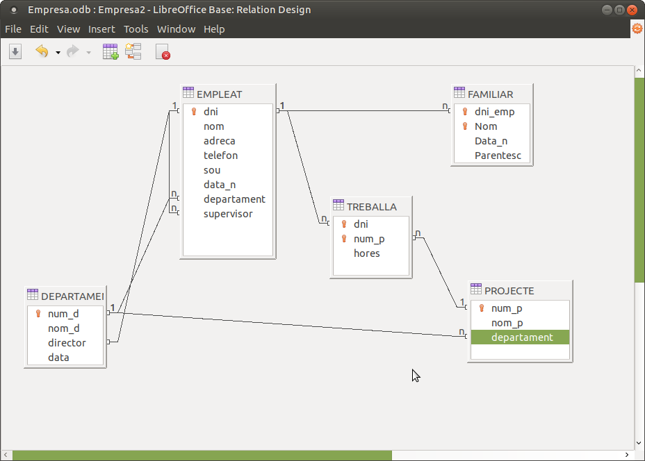

1.1 Taules
Realitzar les següents qüestions:
1.1) Crear una BD en blanc amb el nom Empresa.odb
1.2) Crear les taules DEPARTAMENT i EMPLEAT amb els següents tipus de dades
1.3) Copiar les dades des de Empresa.ods (un full de càlcul). Les dades estan en les pàgines DEPARTAMENT i EMPLEAT respectivament, i heu d'incloure els noms dels camps que estan en la primera línia. Quan enganxeu en la Base de Dades, recordeu d'afegir a les taules ja existents.
1.4) Copiar les dades de FAMILIAR des del mateix full de càlcul (pàgina FAMILIAR). També heu d'incloure els noms dels camps que estan en la primera línia.Quan enganxeu, feu-lo en un taula nova (definició i dades), a la qual li heu de posar el nom FAMILIAR. Durant el procés preguntarà quins camps volem incorporar (tots) i els tipus de dades de cada camp. Aprofiteu eixe moment per posar que el nom del camp és dni_emp (no Dni) i que el camp data_n és de tipus date. En aquest moment NO heu de crear la clau principal
1.5) Crear la clau principal de FAMILIAR, formada per dni_emp + nom
1.6) Crea la taula PROJECTE amb les següents característiques:
No us oblideu de que num_p és la clau principal, i que el camp Departament és no nul.
1.7) Copiar les dades de PROJECTE des del mateix full de càlcul (pàgina Projecte). Observeu que ara no tenim el nom dels camps, per tant hem d'aconseguir afegir les dades a la taula PROJECTE, però desmarcar la casella Usar la primera línia com a noms de les columnes
1.8) Crea la taula TREBALLA amb la següent estructura
TREBALLA (dni: varchar(10), num_p: integer, hores: integer)
No us oblideu de la clau principal formada per dni + num_p
1.9) Crear totes les integritats referencials. Recordeu que la integritat referencial obliga que la clau externa agafe un dels valors ja introduïts de la clau principal on apunta (així per exemple, la fletxa que apunta des del camp Departament de la taula EMPLEAT fins el camp Num_d de la taula DEPARTAMENT obliga a posar a cada empleat un departament vàlid, és a dir, dels existents en l'actualitat). A més les de FAMILIAR i TREBALLA han de modificar i esborrar en cascada.
Segurament la més "complicada" de fer és la reflexiva que marca els supervisors. Per a poder representar-la, en Base heu d'arrastrar des del camp que serà clau externa fins la clau principal de la mateixa taula.
Ací teniu una imatge on es veuen totes les integritats referencials:

1.10) Dissenyar un formulari anomenat Treballa per a introduir les dades a aquesta taula. Els atributs Dni i Num_p s'introduiran per mig de quadres de llista (List Box). En el primer es visualitzaran per més comoditat els noms dels empleat, encara que en realitat servirà per a introduir el dni. En el segon visualitzarem els noms dels projectes, encara que en realitat s'introduirà el num_p. L'atribut Hores s'introduirà per mig d'un quadre de text.
El següent vídeo explica com crear aquest formulari. La dificultat consisteix en definir bé els quadres de llista. El quadre combinat (Combo Box) no resulta ser tan útil en LibreOffice Base, ja que no és tan flexible i no ens permet visualitzar un camp (per exemple el nom de l'empleat) però utilitzar en realitat un altre (el dni de l'empleat).
Introduïu a continuació les següents dades. Observeu que entre parèntesi està el Dni de l'empleat i el número de projecte, però únicament a nivell informatiu. No ha d'aparéixer en el quadre combinat.
| "dni" | "Num_p" | hores |
| Llopis Bernat, Jaume (18876543) | Auditoria 98 (2) | 10 |
| Folch Mestre, Pilar (18932165) | Auditoria 98 (2) | 5 |
| Peris Andreu, Joan (18933333) | Programa comptabilitat (3) | 10 |
| Sebastià Broch, Ferran (18934567) | Programa comptabilitat (3) | 20 |
| Garrido Vidal, Rosa (18900111) | Control vendes (4) | 5 |
| Nebot Aliaga, Carme (18922222) | Control vendes (4) | 25 |
| Folch Mestre, Pilar (18932165) | Control vendes (4) | 5 |
| Garcia Tomàs, Alícia (18944444) | Control vendes (4) | 15 |
| Garrido Vidal, Rosa (18900111) | Recopilació dades (5) | 15 |
| Folch Mestre, Pilar (18932165) | Anàlisi estadística (6) | 5 |
| Sebastià Broch, Ferran (18934567) | Anàlisi estadística (6) | 10 |
| Llopis Bernat, Jaume (18876543) | Estudi rendiment (7) | 5 |
| Folch Mestre, Pilar (18932165) | Estudi rendiment (7) | 15 |
| Garcia Tomàs, Alícia (18944444) | Estudi rendiment (7) | 5 |
Però ¿com estaran introduïdes de veritat les dades? ¿Estarà el nom o el Dni? Les dades "reals" les veurem sempre en la taula (en aquest cas TREBALLA)
Llicenciat sota la Llicència Creative Commons Reconeixement NoComercial SenseObraDerivada 2.5